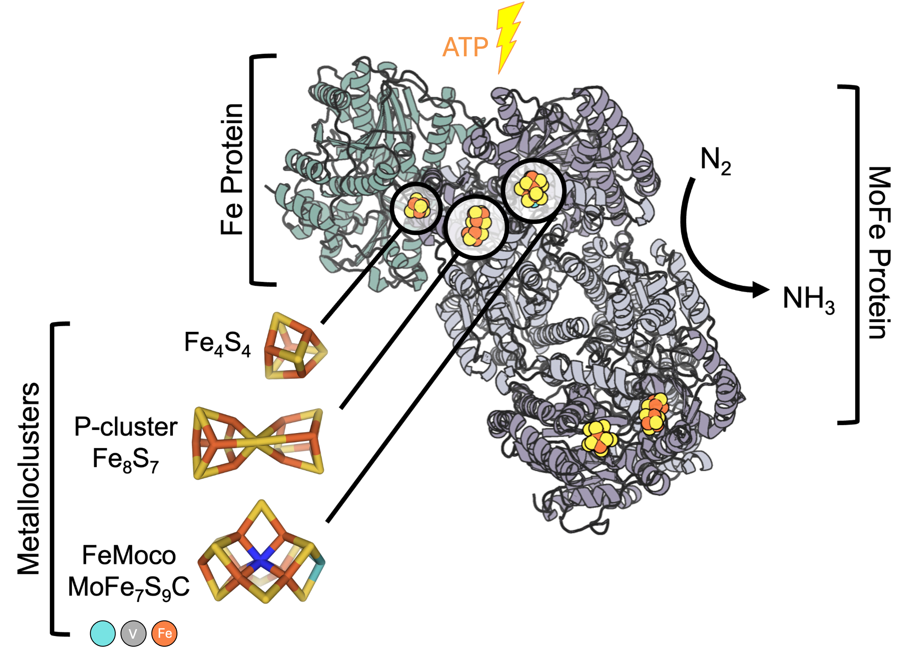

Article Title Goes Here
A one- or two-sentence summary of what this article covers and why it matters. Treat this like an abstract.
Overview
Three metalloclusters drive N2 reduction by nitrogenase: a relatively simple [Fe4:S4] cluster, the P-cluster, and FeMoco (iron-molybdenum cofactor). The dimeric Fe protein houses a single [Fe4:S4], and each hemisphere of the symmetric catalytic component (MoFe protein) houses one set of the [8Fe:7S] P-cluster and [7Fe:1Mo:9S:1C]-R-homocitrate FeMoco (Figure 1). Functionally, the Fe protein’s Fe4S4 cluster ferries low-potential electrons to the MoFe protein. Within the catalytic complex, the P-cluster serves as a waypoint for the low-potential electrons before they reach FeMoco for substrate reduction. Both the P-cluster and FeMoco are among the largest and most complex metalloclusters known in biochemistry. Link to related articles like FeMo-cofactor.

Figure 1. A functional Mo-dependent nitrogenase is composed of a reducing protein (Fe Protein) and a catalytic complex (MoFe Protein). The Fe Protein is a homodimer encoded by nifH (light green), and the MoFe Protein is a heterotetramer encoded by nifD (light purple) and nifK (dark purple). For each electron transfer from the Fe Protein to the MoFe Protein begins at the [Fe4:S4] cluster in the Fe Protein is passed through MoFe Protein’s P-cluster, before reducing dinitrogen at FeMo-co. Figure generated with PDB 1N2C.
Section 2
Subsection 2a
Body text. Use <em> for gene names like nifD, and
<strong> sparingly for key terms.
Use callout boxes for important results, caveats, or definitions that deserve visual emphasis.
Subsection 2b
More body text.
| Residue | Subunit | Role |
|---|---|---|
| α-His195 | NifD (α) | Description of functional role. |
| α-Val70 | NifD (α) | Description of functional role. |
Section 3
Body text.